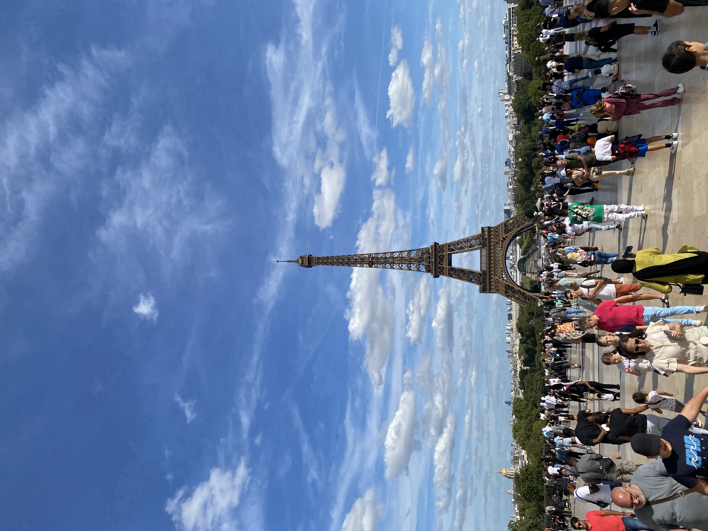

Eiffel Tower
Visiting the Eiffel Tower was a mesmerizing experience, a moment where time seemed to stand still. As I approached this iconic landmark, its grandeur and elegance against the Parisian skyline left me in awe. The journey to the top was an adventure in itself, with each level unveiling a more breathtaking view of the city's intricate layout, the Seine river winding through like a silver ribbon. The panoramic view from the summit was nothing short of magical, especially as the city lights began to twinkle at dusk, transforming Paris into a canvas of golden lights. Standing atop this architectural marvel, I felt a deep connection to the history and culture of Paris, a city that beautifully blends the old with the new. This visit wasn’t just a tourist check-in; it was a profound experience that etched the beauty and romance of Paris deep into my heart.
Disneyland Paris
Visiting Disneyland Paris was like stepping into a vibrant world where imagination knows no bounds and every corner bursts with magic. From the moment I entered, I was swept up in an enchanting atmosphere, where beloved Disney characters came to life, greeting visitors with warmth and joy. Each themed land offered its own unique adventure, from the adrenaline-pumping rides in Adventureland to the whimsical charm of Fantasyland. The highlight was the mesmerizing parade, where dazzling floats and skilled performers captivated the crowd, bringing the magic of Disney stories to life right before my eyes. The spellbinding fireworks show over Sleeping Beauty Castle was the perfect end to the day, lighting up the night sky with a spectacular display of color and sound. Disneyland Paris wasn't just an amusement park; it was a portal to a world where dreams come true and the child within us all can roam free.
London Eye

The London Eye, an iconic feature of the city's skyline, offers a breathtaking perspective of London's sprawling landscape. As the giant observation wheel slowly ascends, each moment in the enclosed capsule brings into view a new facet of the city - from the historic grandeur of the Houses of Parliament and the age-old charm of the River Thames to the modern architecture of The Shard. This remarkable structure, more than just a tourist attraction, symbolizes the blend of London's rich history and its dynamic present. The experience of riding the London Eye is akin to watching the city's story unfold beneath you, with each rotation offering a panoramic view that stretches out to the horizon. It's a moment of peaceful reflection above the bustling city streets, where one can truly appreciate the tapestry of landmarks, parks, and rivers that make London uniquely captivating.
Hippodrome Casino
The Hippodrome Casino in London is a dazzling venue that captures the essence of the city's vibrant nightlife and rich entertainment history. Nestled in the heart of London's West End, this historic building, once a famed theatre and music hall, now stands as a grand casino, offering a thrilling blend of gaming, dining, and live performances. As you step inside, the casino's opulent décor and the electrifying atmosphere instantly immerse you in a world of glamour and excitement. From classic table games to an array of slot machines, the casino caters to all, whether you're a seasoned gambler or a curious first-timer. Beyond gaming, the Hippodrome also boasts an impressive selection of bars and restaurants, where guests can enjoy exquisite meals and cocktails. Additionally, its live shows range from jazz performances to cabaret, making every visit a unique experience. The Hippodrome Casino is not just a place to try your luck; it's a cornerstone of London's entertainment scene, offering a night of sophisticated fun and timeless elegance.